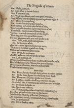
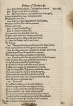
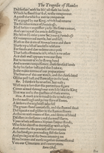
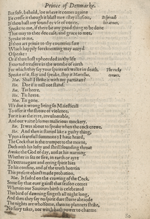
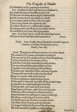
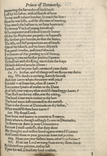
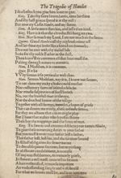

Welcome to the Virtual Printing House
Try arranging pages into your own quarto edition of Hamlet.
We base our exercises on digital images of the Folger’s copy of the second printed edition of Hamlet, known as Q2 by bibliographers and scholars. One of our goals is to heighten the sense that you are viewing a freshly printed sheet. To that end, we have digitally cleaned up the pages and restored some content lost when pages were trimmed, including the edges of signatures and catchwords. Even so, the wear and tear to the pages over time is still evident.
Eight pages per sheet; then repeat
Take a single sheet of paper, print eight pages out of sequence, then with folding, create a readable text in what’s known as a gathering in quarto format. That is what the printers of Q2 Hamlet did. To see how, drag and drop the text of four pages onto one side of a sheet of paper. Note the change in orientation for some of the pages. Then flip the sheet to “print” four additional pages. Fold to create one quarto gathering with the first eight pages of the play.








2r
3v
1v
4r
3r
2v
4v
1r
For Q2 Hamlet, the printers followed this process for eleven more sheets, to create eleven more regular gatherings, with eight pages each. To keep these sheets in order, each gathering was given an identifying letter of the alphabet as a “signature” by the printers. The text of Hamlet started here with the letter B. Texts often started with the signature B, as printers left the A for materials like title pages, which were often printed last.
The sequence of regular gatherings in Q2 Hamlet runs from B through N. Fun fact: there is no J signature, because I and J were not yet understood as distinct letters of the alphabet.
After the printing was finished, the sheets were folded and assembled in alphabetic order to be ready for sale.